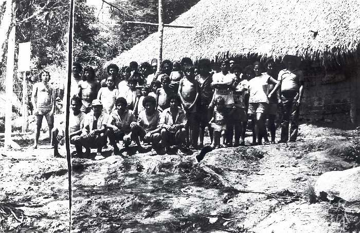

No final do século XIX, o núcleo populacional formado a partir da segunda povoação já apresentava estabilidade demográfica e econômica. A consolidação das famílias locais e a continuidade das atividades extrativistas criaram as condições necessárias para a formalização administrativa da localidade.
Em 23 de março de 1900, foi oficialmente criada a Vila de Curuá. O projeto foi elaborado pelo Senador Fulgêncio Simões, representando o reconhecimento institucional da importância regional do povoado.
A instalação oficial ocorreu em 15 de agosto de 1900, sob a presidência do Intendente de Alenquer, Tenente-Coronel Josino Cardoso Monteiro. Esse ato marcou a transição de um núcleo extrativista informal para uma estrutura administrativa organizada.
A criação da vila significou não apenas um reconhecimento político, mas também a consolidação da identidade local. A partir desse momento, Curuá passou a ter delimitação territorial, organização civil e maior integração com os centros administrativos do Baixo Amazonas.
Esse período representa a maturidade do processo iniciado em 1848. O que começou como ponto de exploração da balata transformou-se em comunidade estruturada, com famílias estabelecidas, vida religiosa ativa e crescente organização social.
Assim, o ano de 1900 constitui um marco decisivo na história institucional de Curuá.
